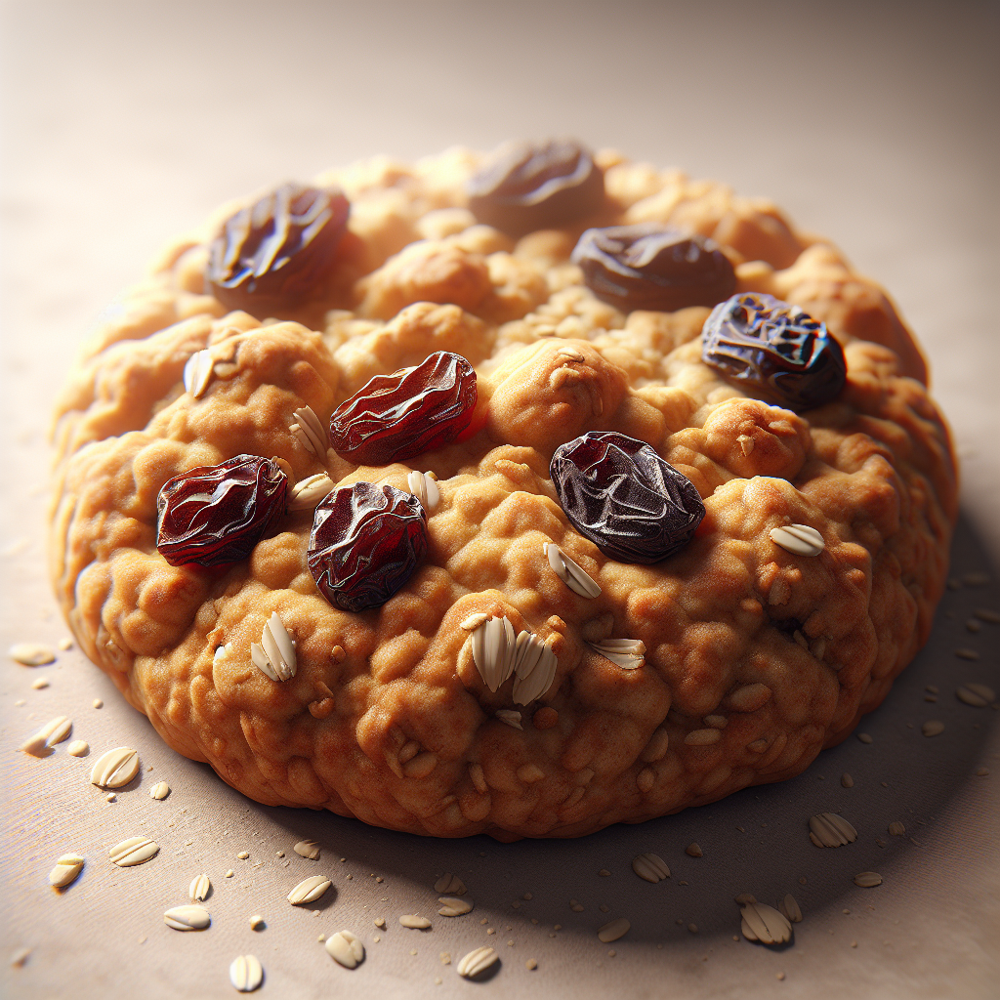
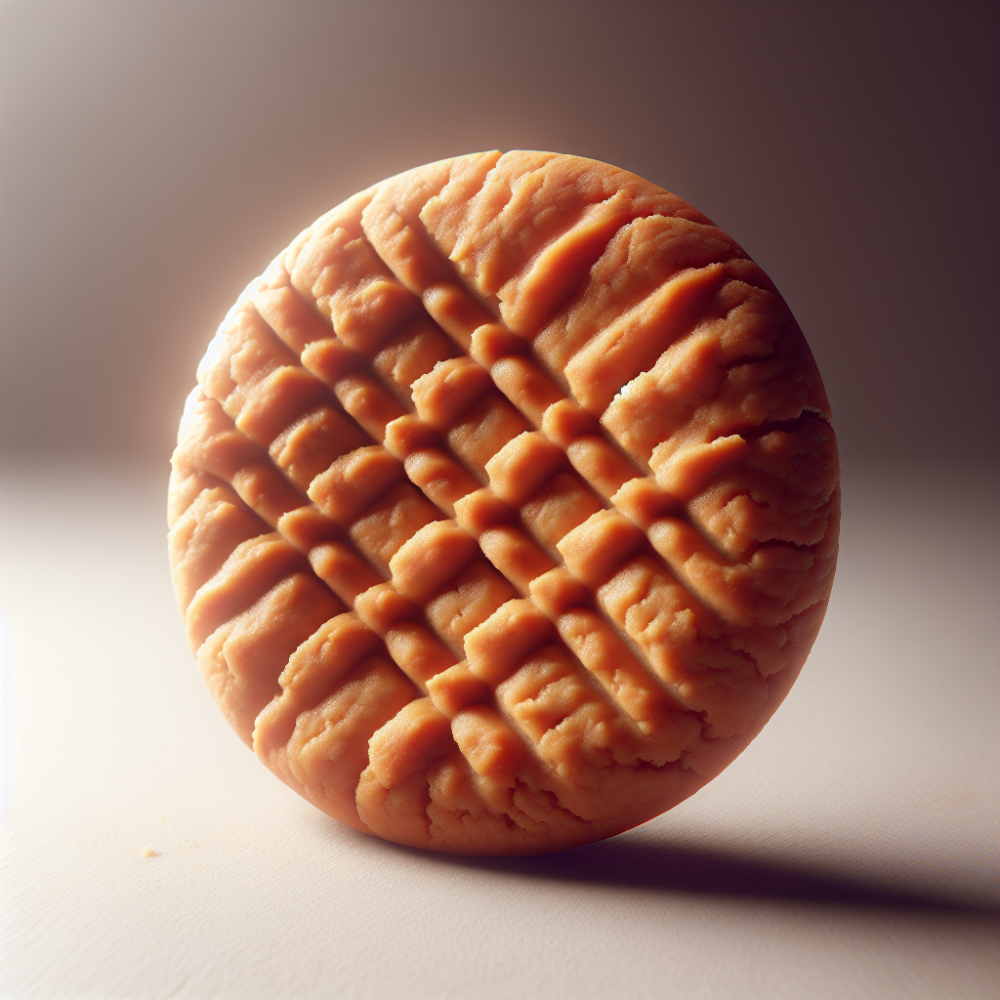

Delicious Cookie Recipes
Explore a variety of delightful cookie recipes including classic favorites and unique twists. Each recipe includes detailed instructions and tips to help you bake the perfect batch every time.
Classic Chocolate Chip Cookie
A timeless cookie packed with gooey chocolate chips and crispy edges, perfect for any occasion.
Ingredients:
- 2 1/4 cups all-purpose flour
- 1 tsp baking soda
- 1 cup unsalted butter, softened
- 3/4 cup granulated sugar
- 3/4 cup brown sugar
- 1 tsp salt
- 2 large eggs
- 2 cups semisweet chocolate chips
Instructions:
- Preheat oven to 375°F (190°C).
- Combine flour and baking soda in a small bowl.
- Cream butter, granulated sugar, brown sugar, and salt in a large mixer bowl until creamy.
- Add eggs one at a time, beating well after each addition.
- Gradually beat in flour mixture.
- Stir in chocolate chips.
- Drop by rounded tablespoon onto ungreased baking sheets.
- Bake for 9 to 11 minutes or until golden brown.

Hearty Oatmeal Raisin Cookie
Wholesome oats and plump raisins combined in a chewy, delicious cookie.
Ingredients:
- 3/4 cup margarine, softened
- 1 cup brown sugar
- 1/2 cup granulated sugar
- 2 eggs
- 1 tsp vanilla extract
- 1 1/4 cups all-purpose flour
- 1 tsp baking soda
- 3/4 tsp ground cinnamon
- 1/2 tsp salt
- 3 cups rolled oats
- 1 cup raisins
Instructions:
- Preheat oven to 375°F (190°C).
- Cream margarine, brown sugar, and granulated sugar until smooth.
- Beat in eggs and vanilla.
- Combine flour, baking soda, cinnamon, and salt; gradually add to creamed mixture.
- Stir in oats and raisins.
- Drop by rounded teaspoon onto ungreased baking sheets.
- Bake for 8 to 10 minutes or until golden brown.

Creamy Peanut Butter Cookie
Rich peanut butter flavor combined with a soft, tender texture that's irresistible.
Ingredients:
- 1 cup peanut butter
- 1 cup sugar
- 1 egg
- 1 tsp baking soda
Instructions:
- Preheat oven to 350°F (175°C).
- Mix peanut butter, sugar, egg, and baking soda until smooth.
- Roll dough into balls and place on baking sheets.
- Flatten each ball with a fork, making a crisscross pattern.
- Bake for 10 minutes or until golden.